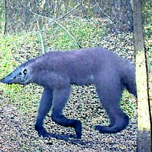
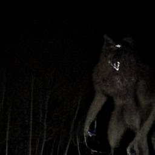
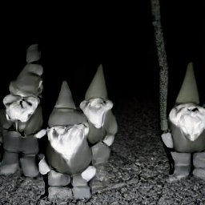

This webpage is dedicated to collecing the undeniable, utterly convincing, hard evidence of bigfoot, werewolves, mothmen, dogmen, aliens, mermaids, yetis, fairies, dwarves, gnomes, greys, mantis people, time travelers, men in black, and other cryptids. Brave world wide web warriors can submit their own photographs to expose the truth.
| Location | Date | Photo |
|---|---|---|
| Ann Arbor, Michigan | 3/11/1999 |  |
| Sioux Falls, South Dakota | 10/21/2001 | |
| Wharton, New Jersey | 8/7/1991 |  |
| Lone Pine, California | 2/13/2000 | |
| Springdale, Washington | 8/29/1996 |  |